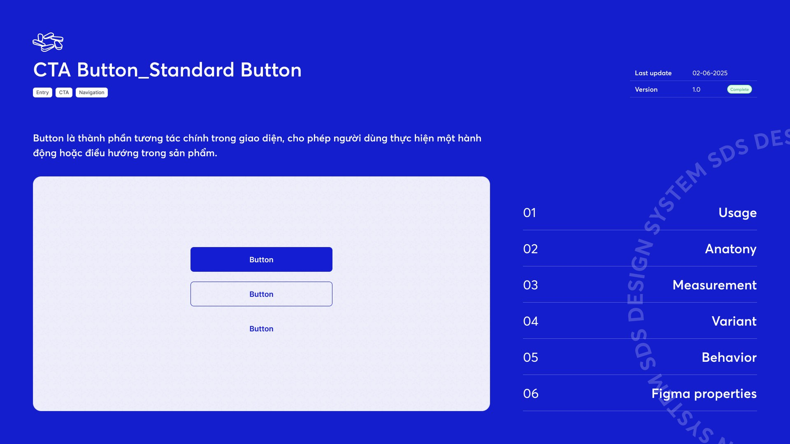
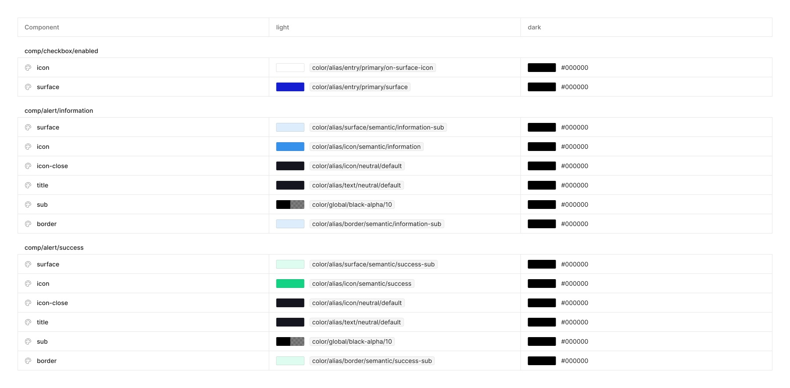
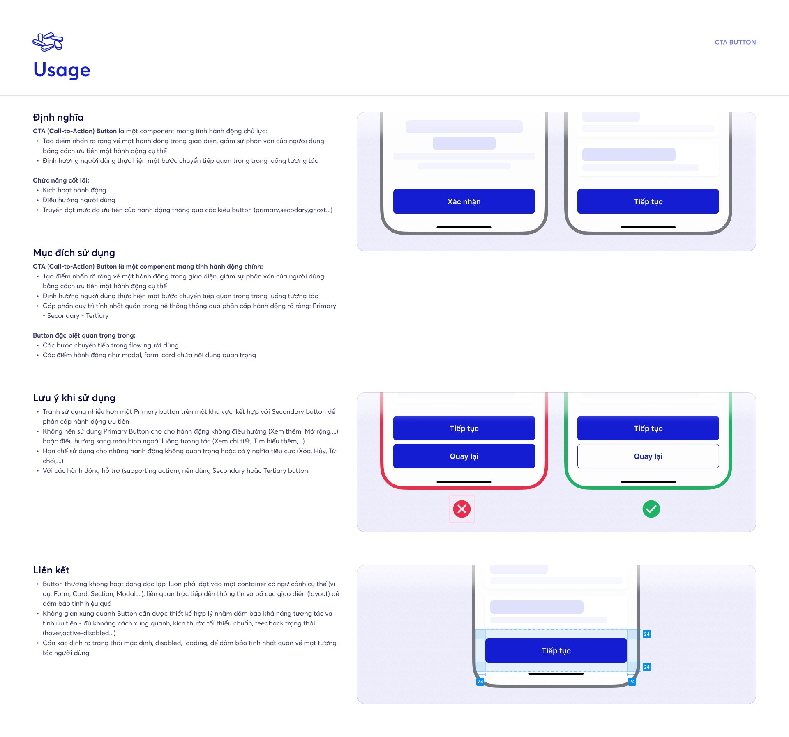
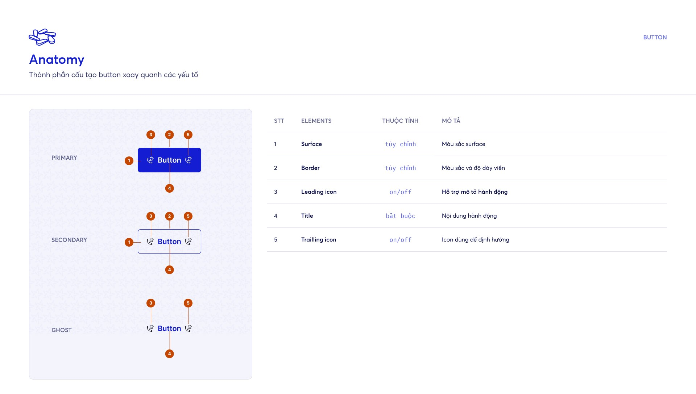
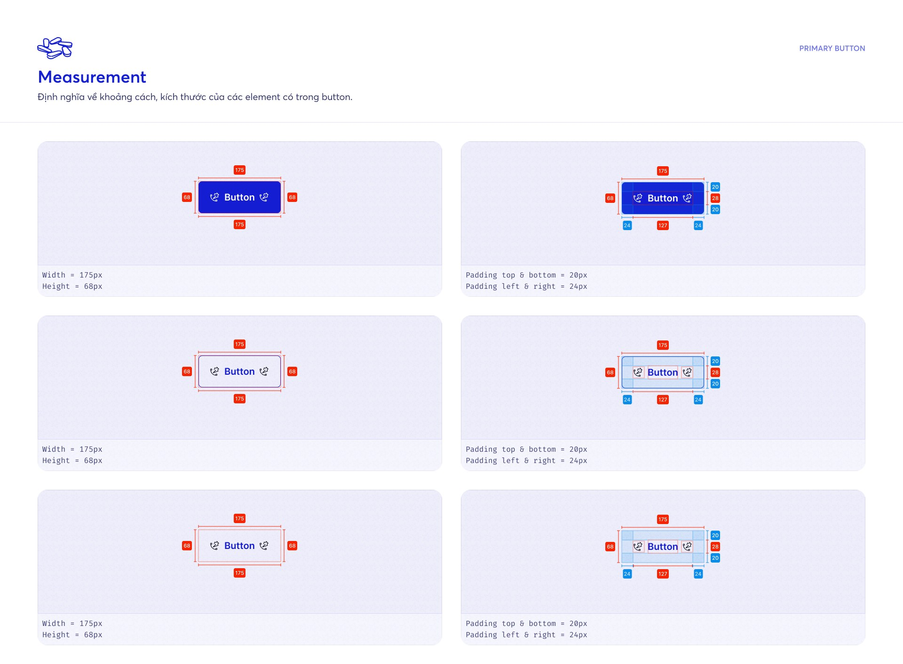
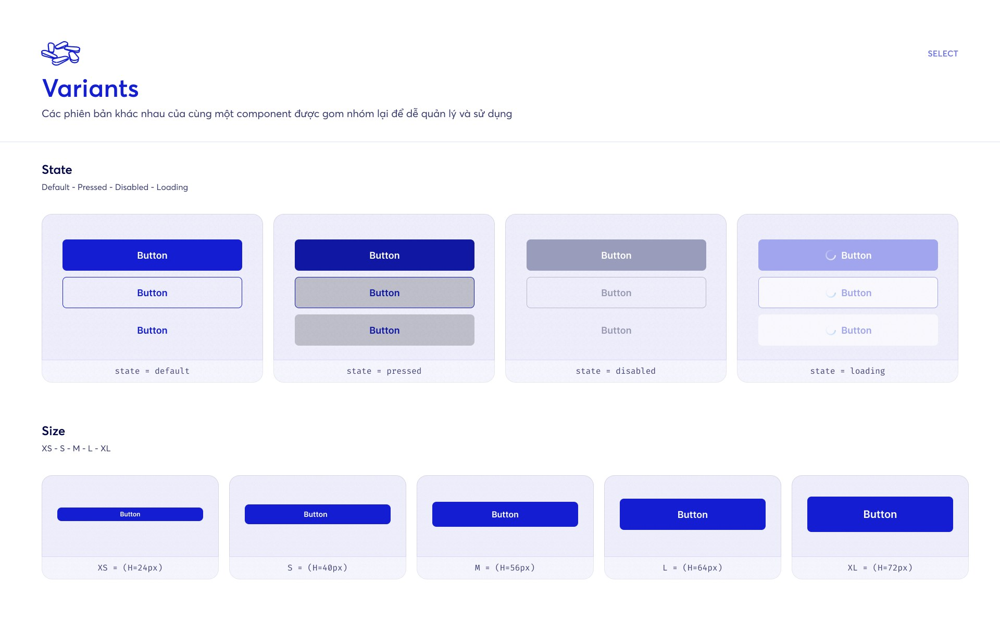

SDS Design System

Một Design System chỉ có giá trị khi cả designer, BA và developer cùng hiểu và dùng nó như nhau — nên mình xây nó như một sản phẩm: token, component và tài liệu.A Design System only pays off when designers, BAs and developers understand and use it the same way — so I built it like a product: tokens, components and documentation.
01 — Bối cảnh01 — ContextNhiều sản phẩm, một ngôn ngữMany products, one language
Các nền tảng nghiệp vụ nội bộ được phát triển bởi nhiều team, mỗi nơi một kiểu màu, nút bấm và trạng thái. Kết quả audit cho thấy cùng một vấn đề lặp lại: thiếu nhất quán, trạng thái không rõ và mỗi lần bàn giao lại phải giải thích lại từ đầu.
Mục tiêu: xây một Design System có nền tảng token rõ ràng, component chuẩn hoá và tài liệu đủ để bất kỳ ai cũng dùng đúng mà không cần hỏi lại designer.
Internal business platforms were built by many teams, each with its own colours, buttons and states. Audits kept surfacing the same problems: inconsistency, unclear states, and every handover meant explaining everything again.
The goal: a Design System with a clear token foundation, standardised components and documentation good enough that anyone can use it correctly without asking a designer.
Audit
Kiểm kê UI hiện có: màu, typography, component, trạng thái bị lặp hoặc lệch.Inventory existing UI: duplicated or drifting colours, type, components, states.
Foundation
Xây token 3 tầng bằng Figma Variables: global → alias → component.Build 3-tier tokens with Figma Variables: global → alias → component.
Component
Dựng component có variant, size, state và property rõ ràng.Build components with clear variants, sizes, states and properties.
Document
Viết tài liệu theo template 6 phần cho từng component.Write docs for every component with a 6-part template.
Govern
Version, trạng thái, ngày cập nhật; hướng dẫn và đồng bộ với dev.Versioning, status, update dates; guidance and sync with developers.
02 — Research02 — ResearchFinger-friendly: thiết kế cho ngón tayFinger-friendly: designing for fingers
Trước khi chốt kích thước component cho mobile, mình tổng hợp nghiên cứu về vùng chạm trên màn hình cảm ứng để mọi nút bấm đều dễ chạm và hạn chế bấm nhầm:
- Apple HIG khuyến nghị vùng chạm tối thiểu 44×44px; Microsoft đề xuất 34px (tối thiểu 26px); Nokia không nhỏ hơn 1×1 cm (~28px).
- Fitts’s Law: mục tiêu càng nhỏ, người dùng càng mất nhiều thời gian và sự chú ý để bấm trúng.
- Ngón trỏ rộng trung bình 16–20 mm (~45–57px), ngón cái ~2,5 cm (~72–75px). MIT Touch Lab: đầu ngón tay 8–10 mm, nên 10×10 mm là vùng chạm tối thiểu phù hợp.
- Giữ khoảng cách ≥ 10px giữa các vùng chạm để tránh chạm nhầm.
Lưu ý: các nghiên cứu này được thực hiện trên mẫu người dùng nước ngoài, nên được dùng làm mốc tham chiếu khi đối chiếu với thang size button của SDS. Bên dưới, mỗi vùng chạm được vẽ đúng tỉ lệ 1:1 trên đầu ngón tay.
Before locking mobile component sizes, I compiled research on touch targets so every control is easy to hit and hard to mis-tap:
- Apple HIG recommends at least 44×44px; Microsoft suggests 34px (26px minimum); Nokia no smaller than 1×1 cm (~28px).
- Fitts’s Law: the smaller the target, the more time and attention it takes to hit it.
- The index finger averages 16–20 mm (~45–57px) and the thumb ~2.5 cm (~72–75px). MIT Touch Lab: fingertips are 8–10 mm, making 10×10 mm a sensible minimum.
- Keep ≥ 10px between targets to avoid accidental taps.
Note: these studies used non-Vietnamese participants, so they serve as benchmarks when checked against the SDS button scale. Below, every target is drawn at 1:1 on a fingertip.
Miếng đệm ngón tay rộng 10–14 mm, đầu ngón tay 8–10 mm → 10×10 mm là vùng chạm tối thiểu phù hợp — nhỏ hơn cả một phím bàn phím (15 mm) hay đồng xu (18 mm).Finger pads are 10–14 mm wide and fingertips 8–10 mm → 10×10 mm is a sensible minimum target — smaller than a keyboard key (15 mm) or a coin (18 mm).
Giữ tối thiểu 10px giữa hai vùng chạm để tránh bấm nhầm khi ngón tay lớn hơn chính nút bấm.Keep at least 10px between two targets to prevent mis-taps when the finger is bigger than the button.
03 — Phương pháp03 — MethodAtomic Design × Master ComponentAtomic Design × Master Components
SDS được xây theo Atomic Design (Tokens → Atoms → Molecules → Organisms → Templates → Pages) kết hợp với Master Component:
- Mỗi họ component có một master ẩn chứa cấu trúc, auto layout, slot icon và token. Các biến thể công khai đều là instance của master đó.
- Sửa master một lần — padding, radius, state, token — mọi biến thể tự cập nhật đồng loạt, không phải sửa tay từng component.
- Atoms (icon, label, surface) ghép thành master; master sinh ra molecules; molecules ghép thành organisms như alert, modal, bottom sheet, topbar.
Hai ví dụ dưới đây lấy từ chính danh sách token của SDS: 5 loại button và 5 loại input cùng sinh ra từ 2 master.
SDS was built with Atomic Design (Tokens → Atoms → Molecules → Organisms → Templates → Pages) combined with Master Components:
- Each component family has one hidden master holding the structure, auto layout, icon slots and tokens. Every public variant is an instance of it.
- Edit the master once — padding, radius, states, tokens — and every variant updates together, with no manual edits.
- Atoms (icon, label, surface) compose the master; masters produce molecules; molecules form organisms such as alerts, modals, bottom sheets and top bars.
The two examples below come straight from SDS’s token list: five button types and five input types, each generated from a single master.
_button (master)button_standardPrimary · Secondary · GhostPrimary · Secondary · Ghostbutton_iconChỉ có iconIcon onlybutton_textDạng link / textLink / textbutton_floatingNút nổi (FAB)Floating (FAB)button_swipeVuốt để xác nhậnSwipe to confirm
_input (master)input_normalNhập liệu cơ bảnBasic fieldinput_numberSố, số tiềnNumbers, amountsinput_PINMã PIN / OTPPIN / OTPsearchTìm kiếmSearchtext_areaNhiều dòngMulti-line
04 — Design tokens04 — Design tokensKiến trúc token 3 tầngA three-tier token architecture
Token là “nguồn sự thật” duy nhất cho mọi quyết định thị giác. Mình tách token thành 3 tầng để thay đổi ở một chỗ mà không phá vỡ chỗ khác:
- Global / Primitive — giá trị thô như
green/11,spacing-md,radius-sm. Không component nào dùng trực tiếp tầng này. - Alias / Semantic — đặt tên theo mục đích:
surface/highlight,icon/semantic/success. Đổi theme chỉ cần đổi tầng này. - Component — gắn vào từng component theo variant và state, ví dụ
button_standard/primary/pressed/surface.
Tokens are the single source of truth for every visual decision. I split them into three tiers so a change in one place never breaks another:
- Global / Primitive — raw values like
green/11,spacing-md,radius-sm. No component uses this tier directly. - Alias / Semantic — named by intent:
surface/highlight,icon/semantic/success. Re-theming only touches this tier. - Component — bound to each component by variant and state, e.g.
button_standard/primary/pressed/surface.
Global / Primitive
Giá trị thô, không mang ngữ nghĩa — bảng màu, spacing, radius, typography.Raw values with no meaning attached — palette, spacing, radius, type.
green/2#E3FFEDgreen/11#32A06Espacing-xs4spacing-md8radius-sm6typo/font-size/lg16Alias / Semantic
Đặt tên theo mục đích sử dụng, tham chiếu tới tầng global.Named by intent, referencing the global tier.
color/alias/surface/highlight/lighter#DEE0FCcolor/alias/surface/neutral/default#FDFDFDicon/semantic/brand#0071E9icon_semantic/success#1FB266icon_semantic/error#EB2D4BComponent
Gắn trực tiếp vào component, theo variant và state.Bound directly to a component, per variant and state.
button_standard/primary/default/surface#141DD2button_standard/primary/pressed/surface#0F17A3button_standard/primary/disabled/surface#9A9CBCbutton_standard/secondary/default/border#141DD2component/button/radius805 — Component token05 — Component tokensMỗi state, mỗi thuộc tính đều có tokenA token for every state and property
Tầng component được tài liệu hoá thành một bảng token đầy đủ: mỗi component được chia theo state (enabled, disabled, information, success…) và mỗi thuộc tính (surface, icon, title, sub, border) trỏ tới một alias token.
- 35 họ component — từ calendar, checkbox, alert, modal, bottom sheet đến button, input, tabs, stepper, date picker.
- 148 nhóm state và khoảng 750+ token component.
- Mỗi token có 2 cột light / dark: light đã map xong vào alias, cột dark đã sẵn cấu trúc để triển khai dark mode.
The component tier is documented as a complete token table: each component is split by state (enabled, disabled, information, success…) and every property (surface, icon, title, sub, border) points to an alias token.
- 35 component families — from calendar, checkbox, alert, modal and bottom sheet to button, input, tabs, stepper and date picker.
- 148 state groups and roughly 750+ component tokens.
- Every token has light / dark columns: light is fully mapped to aliases, and the dark column is structured and ready for dark mode.

06 — Quy tắc đặt tên06 — NamingĐọc tên là biết dùng ở đâuThe name tells you where it goes
Token component được đặt tên theo cấu trúc component / variant / state / property. Developer đọc tên là map được ngay sang code, designer không phải đoán màu nào dùng cho trạng thái nào.
Component tokens follow a component / variant / state / property structure. Developers can map a name straight to code, and designers never have to guess which colour belongs to which state.
| Variant | Default | Pressed | Disabled | Loading |
|---|---|---|---|---|
| primary | Buttonsurface #141dd2 · title #ffffff | Buttonsurface #0f17a3 · title #ffffff | Buttonsurface #9a9cbc · title #ffffff | Buttonstate = loading |
| secondary | Buttonsurface transparent · title #141dd2 | Buttonsurface #00000033 · title #0f17a3 | Buttonsurface #ffffff05 · title #9899b2 | Buttonstate = loading |
| ghost | Buttonsurface transparent · title #141dd2 | Buttonsurface #00000033 · title #0f17a3 | Buttonsurface #ffffff05 · title #9899b2 | Buttonstate = loading |
Button bên trên được render trực tiếp từ giá trị token trong Figma.The buttons above are rendered directly from the token values in Figma.
07 — Foundation07 — FoundationSize, typography, elevationSize, typography, elevation
Button có 3 size: XS (24px), S (40px) và M (56px), padding chuẩn 20px trên/dưới và 24px trái/phải, bo góc lấy từ component/button/radius = 8.
Typography dùng Inter với thang title/size-xs → xl (12/18 đến 20/28, semibold). Elevation có shadow/E1 cho card và E-CTA riêng cho nút hành động.
Buttons come in 3 sizes: XS (24px), S (40px) and M (56px), with standard padding of 20px top/bottom and 24px left/right, and corner radius from component/button/radius = 8.
Typography uses Inter on a title/size-xs → xl scale (12/18 to 20/28, semibold). Elevation has shadow/E1 for cards and a dedicated E-CTA for action buttons.
XSH = 24pxSH = 40pxMH = 56pxxsTiếp tục — Continue12 / 18 · 600sTiếp tục — Continue14 / 22 · 600mTiếp tục — Continue16 / 24 · 600lTiếp tục — Continue18 / 28 · 600xlTiếp tục — Continue20 / 28 · 60008 — Documentation08 — DocumentationMột template, sáu phần, mọi componentOne template, six parts, every component
Mỗi component có một trang tài liệu theo cùng template, mở đầu bằng trang bìa ghi tên, tag (Entry · CTA · Navigation), ngày cập nhật, version và trạng thái — để mọi người biết mình đang đọc bản nào và đã hoàn thiện chưa.
Phần Usage không chỉ định nghĩa component mà còn có Do / Don’t bằng hình: ví dụ không đặt hai Primary button cạnh nhau, hành động phụ dùng Secondary hoặc Tertiary.
Every component gets a doc page from the same template, opening with a cover showing name, tags (Entry · CTA · Navigation), last update, version and status — so readers know which version they’re on and whether it’s final.
Usage goes beyond a definition with visual Do / Don’t examples: never two Primary buttons side by side; supporting actions use Secondary or Tertiary.
Usage
Định nghĩa, mục đích, lưu ý, liên kết.Definition, purpose, do / don’t, context.
Anatomy
Các phần tử cấu thành và thuộc tính.Parts and their properties.
Measurement
Kích thước, padding, khoảng cách.Sizes, padding, spacing.
Variant
State và size được gom nhóm.Grouped states and sizes.
Behavior
Tương tác và phản hồi trạng thái.Interaction and state feedback.
Figma properties
Property để dev & designer dùng đúng.Properties so teams use it right.




09 — Vận hành09 — OperationsQuản lý component như một backlogManaging components like a backlog
Toàn bộ component được quản lý trong một bảng theo dõi, mỗi component đi qua 5 cột tiến độ: Reference (nghiên cứu tham chiếu) → UI Design → Token → Document, kèm version và nền tảng áp dụng (Mobile / Web / All).
Nhờ bảng này, cả team biết component nào đã sẵn sàng để dùng, component nào đang review và phần nào còn thiếu tài liệu — ví dụ nhóm component cho web (Breadcrumbs, Combobox, Pagination…) đang được lên kế hoạch cho giai đoạn tiếp theo.
Bảng dưới là trích đoạn component #10–#36.
Every component is tracked in a component list and moves through five progress columns: Reference (benchmark research) → UI Design → Token → Document, plus its version and target platform (Mobile / Web / All).
The list tells the whole team which components are ready to use, which are in review and which still lack docs — for example, the web-only set (Breadcrumbs, Combobox, Pagination…) is planned for the next phase.
The table below is an excerpt, components #10–#36.
| Component | Ver | Reference | UI Design | Token | Document | Device | |
|---|---|---|---|---|---|---|---|
| 10 | Floating Button | 1.0 | Todo | done | done | — | — |
| 11 | Header/Top bar | 1.0 | in progress | done | done | Todo | Mobile |
| 12 | Input | 1.0 | done | done | done | Todo | All |
| 13 | PIN input | 1.0 | Todo | done | done | — | — |
| 14 | Popup + Dialogue | 1.0 | done | done | done | Todo | All |
| 15 | Progress | 1.0 | in review | done | done | Todo | All |
| 16 | Radio | 1.0 | done | done | done | Todo | All |
| 17 | Search | 1.0 | Todo | done | done | — | — |
| 18 | Slide button | 1.0 | Todo | done | done | — | — |
| 19 | Slider | 1.0 | done | done | done | in review | All |
| 20 | Status | 1.0 | Todo | done | done | — | — |
| 21 | Stepper | 1.1 | Todo | done | done | — | — |
| 22 | Steps | 1.0 | done | done | done | Todo | All |
| 23 | Switch | 1.0 | done | done | done | in review | All |
| 24 | Tabs | 1.0 | done | done | done | Todo | All |
| 25 | Tag | 1.0 | in review | done | done | Todo | All |
| 26 | Text area | 1.0 | Todo | done | done | — | — |
| 27 | Time Picker | 1.0 | done | done | done | Todo | All |
| 28 | Timeline | 1.0 | done | done | done | Todo | All |
| 29 | Toast message | 1.0 | done | done | done | Todo | All |
| 30 | Tooltip | 1.0 | done | done | done | Todo | All |
| 31 | Breadcrumbs | 1.0 | Todo | Todo | Todo | Todo | web |
| 32 | Combobox | 1.0 | Todo | Todo | Todo | Todo | web |
| 33 | Command Panel | 1.0 | Todo | Todo | Todo | Todo | web |
| 34 | Counter | 1.0 | Todo | Todo | Todo | Todo | web |
| 35 | Dropdown List | 1.0 | Todo | Todo | Todo | Todo | web |
| 36 | Pagination | 1.0 | Todo | Todo | Todo | Todo | web |
10 — Bài học10 — LearningsDesign System là sản phẩm, không phải thư việnA Design System is a product, not a library
- Tách token theo tầng giúp đổi brand / theme mà không phải sửa từng component.
- Tên token tốt là tài liệu tốt nhất: cấu trúc component / variant / state / property giúp giảm câu hỏi khi bàn giao.
- Tài liệu cần có version và trạng thái — người dùng phải biết bản nào là bản đúng.
- Dùng AI (Claude Code) để hỗ trợ rà soát, đặt tên và viết tài liệu giúp duy trì hệ thống nhanh hơn.
- Tiered tokens let you change brand or theme without touching every component.
- Good token names are the best documentation: component / variant / state / property reduces questions at handover.
- Docs need versions and status — people must know which version is the source of truth.
- Using AI (Claude Code) to help review, name and write docs keeps the system maintainable.